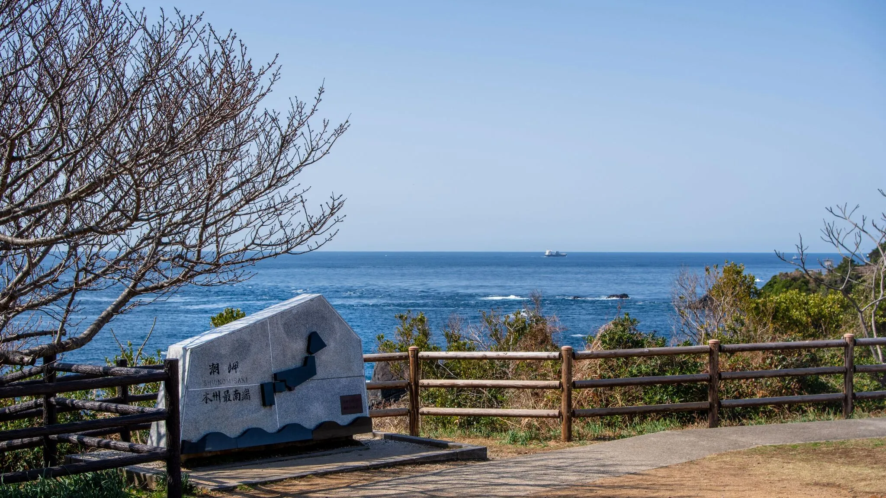

ダイバーのための串本ガイド
1 「ダイバーのための串本ガイド」とは

串本町でのダイビングを計画している方向けの個人制作ガイドです。
アクセス、町内の移動手段、ダイビングサービス、食事や買い物など、現地で困らないための実用情報をまとめています。
情報は個人調査によるものであり、最新情報は各事業者にご確認ください。
2 串本の海況と天気
串本の天気情報と海況の提供を試験的に続けてまいりましたが、試験運用により労力が個人能力を凌駕していることが判明いたしました。これからは以下のページを参考にされるようにお願い申し上げます。
3 串本町へのアクセス
3.1 マップ
3.2 公共交通機関
3.2.1 大阪方面から
- 京都、新大阪、天王寺からJRきのくに線にて串本駅下車。
3.2.2 名古屋方面から
- 名古屋駅からJR紀勢本線にて紀伊勝浦駅へ、紀伊勝浦駅で乗り換えて串本駅下車。
- 名古屋から新幹線で新大阪へ、新大阪からJRきのくに線にて串本駅下車。
3.3 乗用車
3.3.1 大阪方面から
- 大阪から近畿自動車道・阪和自動車道・紀勢自動車道ですさみ南ICへ。
- すさみ南ICから国道42号線で串本町へ。
3.3.2 名古屋方面から
- 名古屋から東名阪自動車道・伊勢自動車道・紀勢自動車道・尾鷲熊野道路を利用。
- 熊野市大泊ICから国道42号を南下し串本町へ。
4 串本町内の移動手段
串本町内は自由に移動しようと思うと乗用車が必須です。大阪や名古屋のような都心部と異なり、公共交通機関はお世辞にも便利とはいえません。車による来串をお勧めしますが、事情により車での来訪が難しい場合、便利とは言い難いものの以下の代替交通機関があります。
4.1 レンタカー
4.2 タクシー
- 串本タクシー / 大島タクシー
- 古座川タクシー（古座駅前）
Tel: 0735-72-0369
4.3 レンタサイクル
4.4 串本町営コミュニティバス
コミュニティバスは数少ない現地の公共の足です。各集落のご高齢の方たちの大事な足です。マナーだけはしっかりと守っていただけるようお願いします。
- 料金は ¥200-
- 以下の人は ¥100-
- 障害者手帳(身体障害者手帳、精神障害者保健福祉手帳、療育手帳)の提示がある方
- 介護保険の要介護・要支援・事業対象者の認定を受けた方、またはその方に付添い同乗される方
- 75歳以上の方
注)割引を受けようとする場合は必ず身体障害者手帳等、介護保険被保険者証または後期高齢者医療被保険者証（資格確認書）の提示が必要です。提示がない場合は割引は適用されません。
各ダイビングサービスの最寄りバス停は "ダイビングサービス" のタブをお読みください。
5 ダイビングサービスリスト
一部のサービスを除き串本駅からの送迎を対応していますが、繁忙期は除きます。単に人手が足りないからという理由です。
繁忙期はゲスト対応、ボートの出港で非常に忙しく、送迎は難しい場合があります。
なのでコミュニティバスの最寄りバス停を掲載しておきます。
コミュニティバスの時刻表と、各サービスの集合時間を突き合わせて、余裕のある行動をお願いします。
| 路線名 | バス停 | サービス名 | 備考 |
|---|---|---|---|
| ー- | ー | MoreColor | 串本駅から徒歩 4 分 |
| 和深線 大島線 潮岬・出雲線 | 串本桟橋前 | 村上水軍 | 下段と同一サービス。串本桟橋前バス停から徒歩 8 分。串本駅から徒歩 20 分。 |
| 和深線 | 上浦 | 村上水軍 | 上段と同一サービス。上浦バス停から徒歩 3 分。串本駅から徒歩 20 分。 |
| 和深線 | 袋 | 南紀シーマンズクラブ | |
| 和深線 | 袋 | AQUA VISTA | |
| 和深線 | 袋 | ARK Diving Shop | |
| 和深線 | 袋 | 串本ダイビングセンター | |
| 和深線 | 袋 | 串本マリンセンター | |
| 和深線 | 袋 | DIVE KOOZA | |
| 和深線 | 袋 | ダイブステーション | |
| 和深線 | 袋 | ダイブゼスト | スクーバ休止中 / スキンダイビングのみ |
| 和深線 | 袋 | バブルリングダイバーズ | |
| 和深線 | 袋 | pole pole＠sea | |
| 和深線 | 袋 | マリンステージ串本店 | |
| 和深線 | 向袋 | Ai Shop（アイショップ） | |
| 和深線 | 海中公園センター | 串本ダイビングパーク | |
| 和深線 | 高富 | コーラルクイーン | 高富バス停から徒歩 7 分。 |
| 和深線 | 高富 | シートピア串本 | Tel: 0735-62-5432、高富バス停から徒歩 1 分。 |
| 和深線 | 東目 | オレンジハウス | |
| 和深線 | 東目 | 赤鯱ダイビングショップ | |
| 和深線 | 有田 | センターウェル | 有田バス停から徒歩 4 分。 |
| 和深線 | 田並 | AQUIA MEISTER KUSHIMOTO | |
| 和深線 | 田子の浦 | 双島マリンクラブ | |
| 和深線 | 安指 (？) | 水中お散歩クラブ | 最寄りバス停は要確認 |
| 潮岬・出雲線 | 潮岬灯台前 | Akamatsu Diver's |
5 食事
- 一刀庵
- レストランサンドリア
- 紀州園
- 大阪王将
6 買い物
6.1 串本駅周辺
- オークワ串本店
- エバーグリーン串本店
- ダイソーオークワ串本店
- ファミリーマート串本駅前店
6.2 スーパー
- Aコープ VASEO
6.3 コンビニ
- ローソン串本町串本店
- ファミリーマート串本町桟橋店
- ローソン串本町高富店